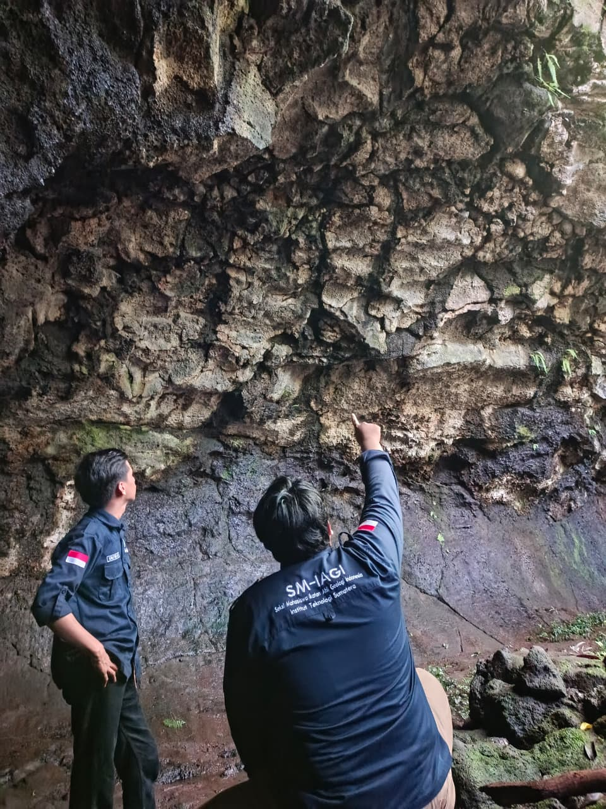

Eksplorasi 3D Gua Pandan Interaktif
Jelajahi misteri lorong lava Gua Pandan tanpa harus beranjak dari tempat Anda! Lewat visualisasi 3D interaktif, putar dan singkap rahasia batuan vulkanik purba secara nyata. Rasakan sensasi petualangan imersif yang menggabungkan pesona alam dan keajaiban geologi hanya dalam satu klik.
Latar Belakang Geologi
Memahami proses alamiah yang membentuk mahakarya bawah tanah.
Gua Pandan yang berlokasi di Lampung Timur adalah salah satu fenomena geologi yang unik dan memukau. Berbeda dengan mayoritas sistem gua di Indonesia yang terbentuk dari pelarutan batu gamping (karst), Gua Pandan merupakan lorong lava (lava tube). Gua ini terbentuk dari proses pendinginan aliran magma vulkanik pada masa lampau.
Berdasarkan berbagai studi dan jurnal geologi terpublikasi, litologi utama penyusun dinding dan lorong Gua Pandan adalah basalt vesikular. Batuan magmatik ini terbentuk ketika lava basaltik dengan viskositas rendah mendingin dengan sangat cepat, lalu memerangkap gas-gas vulkanik sehingga menciptakan struktur batuan dengan banyak rongga udara (vesikel). Gua ini menjadi laboratorium alam yang luar biasa untuk mempelajari jejak vulkanisme purba.

Fitur Geologi Gua Pandan
Anatomi gua dan formasi batuan yang menyusun ekosistem vulkanik ini.
Lorong Lava (Lava Tube)
Gua ini terbentuk saat aliran lava bagian permukaan mendingin dan membeku menjadi kerak keras, sementara magma cair di bagian dalamnya tetap mengalir, meninggalkan terowongan vulkanik kosong.
Basalt Vesikular
Batuan penyusun utama gua adalah basalt vesikular. Tekstur batuan ini dipenuhi oleh rongga-rongga kecil (vesikel) yang terbentuk dari gelembung gas yang terperangkap saat pendinginan lava secara cepat.
Lavacicle (Stalaktit Lava)
Pada atap gua dapat dijumpai bentukan menyerupai stalaktit yang disebut lavacicle. Ornamen ini terbentuk dari sisa-sisa tetesan lava panas yang membeku sesaat sebelum jatuh ke lantai gua.
Jejak Vulkanisme Sukadana
Kehadiran Gua Pandan menjadi rekaman jejak letusan gunung api purba yang menghasilkan Formasi Basalt Sukadana, memberi petunjuk penting tentang sejarah vulkanik di wilayah Lampung Timur.
Timeline Pembentukan
Bagaimana Gua Pandan berevolusi melintasi waktu geologi.
Aktivitas Erupsi Magma
Magma basaltis berviskositas sangat rendah mengalir deras ke permukaan bumi, menyebar luas dan membentuk aliran lava pijar di wilayah Lampung Timur.
Pembentukan Kerak Permukaan
Bagian terluar aliran lava yang terekspos udara bersuhu lebih dingin mengalami pembekuan cepat, membentuk kerak keras (atap) yang mengisolasi panas lava di bawahnya.
Pengosongan Terowongan
Erupsi berhenti dan suplai magma dari pusat terputus. Sisa lava cair di dalam lorong terus mengalir akibat gaya gravitasi, mengosongkan isi ruang dan membentuk lava tube.
Pendinginan & Pelapukan
Lava sepenuhnya membeku membentuk batuan basalt vesikular. Seiring perjalanan waktu, proses pelapukan dan keruntuhan atap menyingkap pintu masuk menuju lorong Gua Pandan.
Galeri Fitur Gua
Jelajahi keindahan struktur batuan vulkanik yang menakjubkan melalui potret visual.


Lokasi & Akses
Panduan rute menuju situs Geoheritage Gua Pandan.
Gua Pandan, Lampung Timur
Sukadana, Kabupaten Lampung Timur,
Provinsi Lampung, Indonesia.
Dapat diakses menggunakan kendaraan bermotor, dilanjutkan dengan berjalan kaki ringan menyusuri jalur setapak.
Disarankan membawa perlengkapan penerangan tambahan dan menggunakan alas kaki yang tidak licin.
Nilai Penting Geoheritage
Gua Pandan bukan sekadar rongga di bawah tanah, melainkan monumen alamiah yang menyimpan data aktivitas vulkanisme basaltik purba di Lampung Timur. Pelestariannya sangat penting untuk fungsi edukasi, penelitian ilmu kebumian, serta perlindungan situs lorong lava (lava tube) yang amat langka di Sumatera.